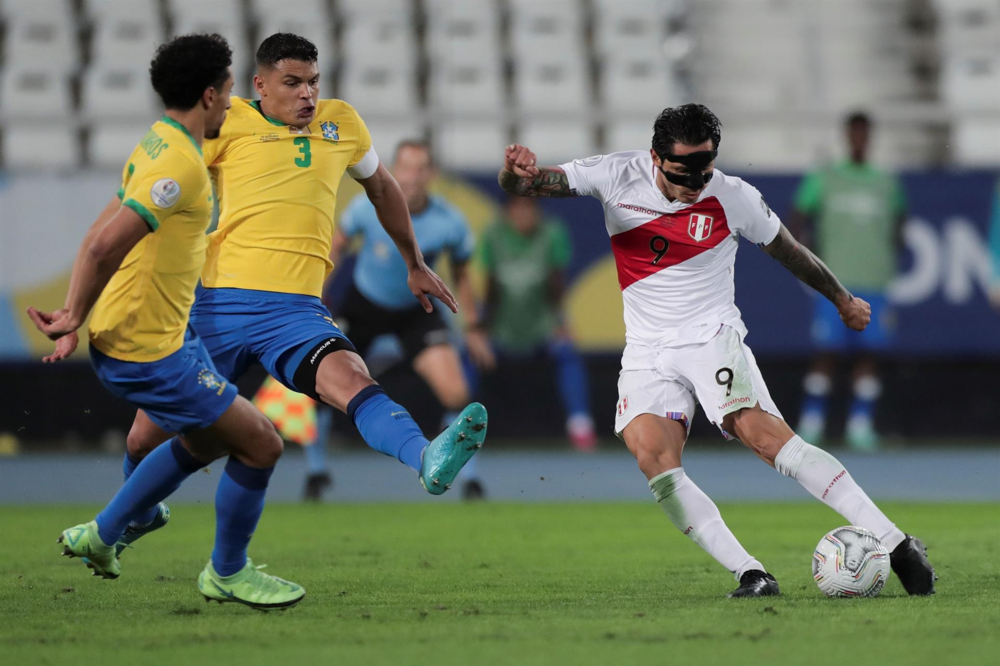
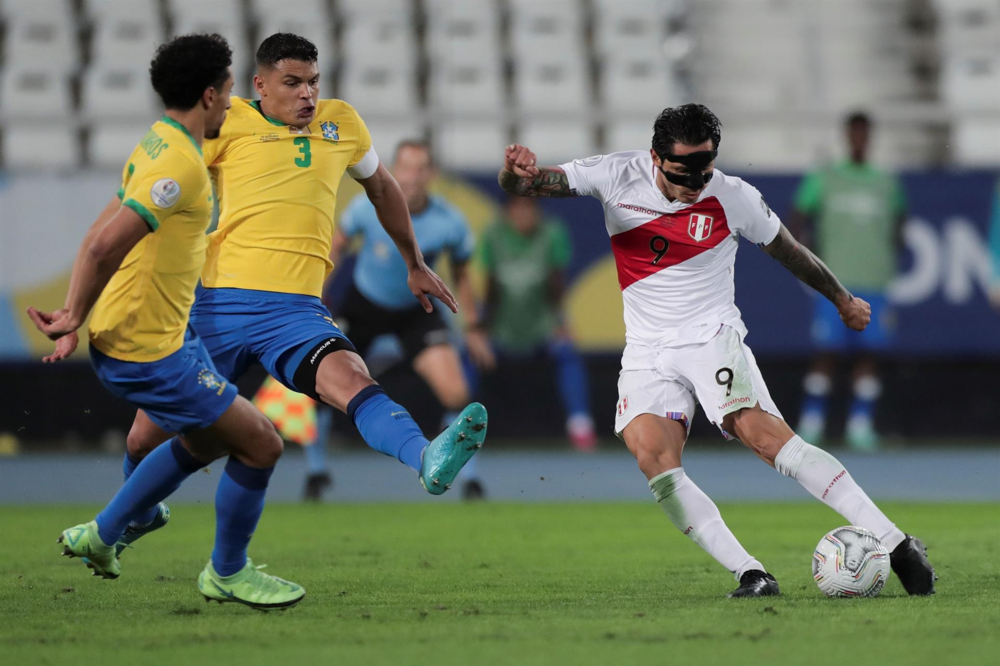
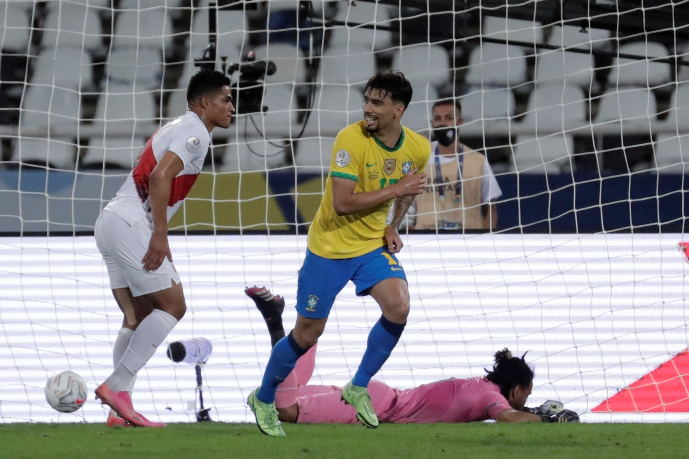
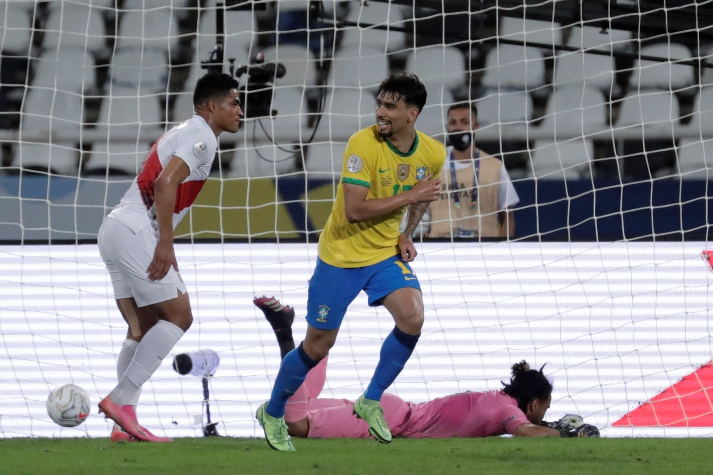

Neymar Jr
Neymar da Silva Santos Júnior (born 5 February 1992), known as Neymar, is a Brazilian professional footballer who plays as a forward for Ligue 1 club Paris Saint-Germain and the Brazil national team. He is widely regarded as one of the best players in the world.

Lionel Messi
Lionel Andrés Messi[note 1] (Spanish pronunciation: [ljoˈnel anˈdɾes ˈmesi] (About this soundlisten); also known as Leo Messi,[8] (born 24 June 1987) is an Argentine professional footballer who plays for and captains the Argentina national team.

Cristiano Ronaldo
Cristiano Ronaldo dos Santos Aveiro GOIH ComM (Portuguese pronunciation: [kɾiʃˈtjɐnu ʁɔˈnaɫdu]; born 5 February 1985) is a Portuguese professional footballer who plays as a forward for Serie A club Juventus.and the Argentina national team. Commonly referred to as "La Joya".

Paulo Dybala
Paulo Exequiel Dybala (born 15 November 1993) is an Argentine professional footballer who plays as a forward for Serie A club Juventus and the Argentina national team. Commonly referred to as "La Joya".
Mesut Ozil
Mesut Ozil (born 15 November 1993) is an Argentine professional footballer who plays as a forward for Serie A club Juventus and the Argentina national team. Commonly referred to as "La Joya".
Mauro Icardi
Mauro Icardi (born 15 November 1993) is an Argentine professional footballer who plays as a forward for Serie A club Juventus and the Argentina national team. Commonly referred to as "La Joya".
Di Maria
Di Maria (born 15 November 1993) is an Argentine professional footballer who plays as a forward for Serie A club Juventus and the Argentina national team. Commonly referred to as "La Joya".
Kylian Mbappé
Kylian Mbappé (born 15 November 1993) is an Argentine professional footballer who plays as a forward for Serie A club Juventus and the Argentina national team. Commonly referred to as "La Joya".
Mohamed Salah
Mohamed Salah (born 15 November 1993) is an Argentine professional footballer who plays as a forward for Serie A club Juventus and the Argentina national team. Commonly referred to as "La Joya".

Harry Kane
Harry Kane (born 15 November 1993) is an Argentine professional footballer who plays as a forward for Serie A club Juventus and the Argentina national team. Commonly referred to as "La Joya".

Kevin De Bruyne
Kevin De Bruyne (born 15 November 1993) is an Argentine professional footballer who plays as a forward for Serie A club Juventus and the Argentina national team. Commonly referred to as "La Joya".

Philippe Coutinho
Philippe Coutinho Dybala (born 15 November 1993) is an Argentine professional footballer who plays as a forward for Serie A club Juventus and the Argentina national team. Commonly referred to as "La Joya".
All Highlights Copa America 2021
History of the Argentina national football team (category All articles with specifically marked weasel-worded phrases) Argentina has been very successful in the Copa América
Watch Now 🡢
Gallery
 


 
